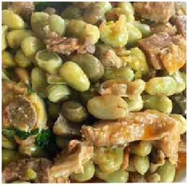

Chapter 5 · Matching food with wine
Favas Guizadas com Entrecosto

This typical and tasty food is a very Portuguese speciality. In Germany, this legume is known as Saubohne, which means that it used as animal feed. But since the ancient Romans took Vicia faba seriously, in its specific phase it can be one of the tastiest foods. When late spring comes around, broad beans are stewed with sausages and pork ribs, chouriço and coriander in this marvellous rustic recipe. The outer skin of the bean envelops a filling with an intense green, herbal, forest, earthy flavour that is at the same time sweet and buttery. A delicious and characteristic bitter aftertaste lingers in the final sensations. Cover the pan and leave to cook on a low heat for as long as it takes for the broad beans to become tender!
Wine: Very rich whites, rosés and reds are the right choices for this typical example of Portuguese cuisine. With broad beans, aromatic herbs often come together, in different shades of green and many forms, and these flavours are enhanced by the choice of a more complex wine.
Explanation: When looking for wine, the flavour of the herbs can be important in making an immediate connection between the dish and the wine. Fresh green spices such as basil, mint and coriander go best with white wines without much complexity. Dried spices such as oregano and thyme are ideal for young reds, while sage, bay leaf and rosemary are ideal for noble reds.